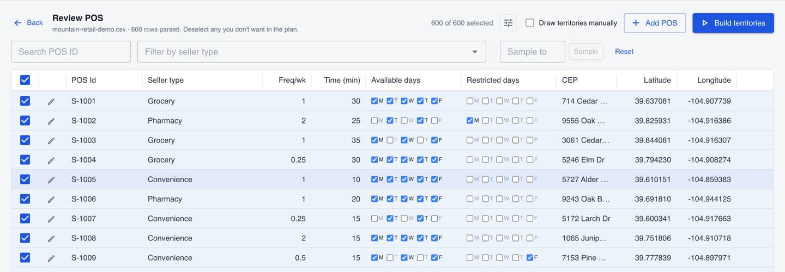
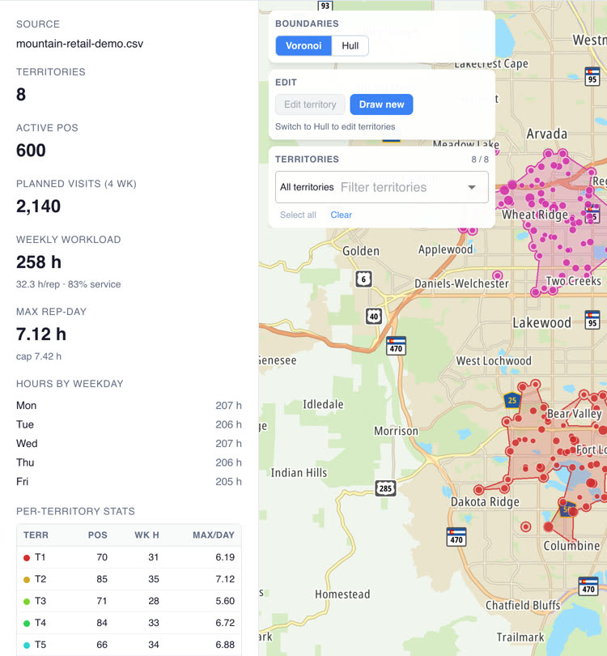
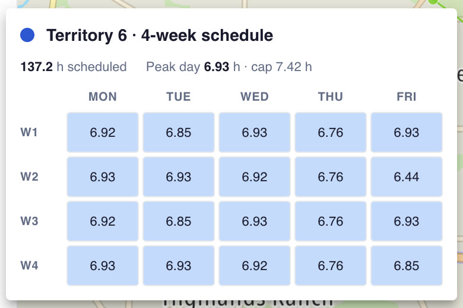
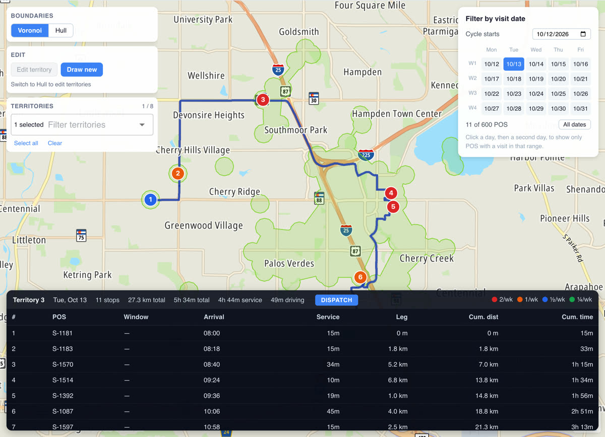

Balanced territories. A schedule every rep can keep.
Upload your points of sale. Territory Planner splits them into workload-balanced territories, builds a 4-week visit schedule for each rep, and plans an optimized driving route for any day.
The whole flow in 90 seconds, from a spreadsheet to a day's route. Fictional stores on a real map.
How it works
From a spreadsheet to Monday's route.
One upload, one click to build, then refine it on the map.
Upload
Drop in an Excel or CSV file of points of sale: location, visit frequency, service time and allowed days.
Build
The planner sizes the team from the workload, balances the territories and schedules every visit.
Refine
Redraw a territory's outline on the map, then recalculate. Or fix the number of territories yourself.
Route
Pick a territory and a day to get an optimized stop sequence with arrival times.
Your data, as it is
Review every point of sale before you plan.
Import .xlsx, .xls or .csv. Visit frequency, service time and allowed days show up as a table you can filter, sample, edit and add to. Problem rows are flagged, not hidden.
- Twice a week down to once a month
- Available and restricted weekdays per store
- Add a store by typing its address

Balanced by workload
Territories sized by hours, not by count.
Each territory is balanced on weekly workload: service time plus travel, for every visit. Travel estimates are checked against real road distances from NextBillion.ai.
8 territories · 28 to 35 h a week eachKnow your headcount already? Fix the number of territories and the planner balances the load across them.

A schedule, not just a map
Four weeks of visits, day by day.
Every visit lands on an allowed day, and every rep-day stays under the daily cap. Hover a territory to see its whole 4-week calendar.
2,140 visits in 4 weeks · busiest day 7.12 h of 7.42 h
Today's route
From the plan to the driving route.
Select one territory and a day, and NextBillion.ai's route optimization orders the stops. You get arrival times, service and drive time, and the route on the map. It honors delivery windows when your file has them.
11 stops · 27.3 km · 49 min driving
Built for the field team
Edit, save and share the plan.
Redraw
Drag a territory's outline. Stores left outside move to the nearest territory.
Recalculate
Re-run the schedule after any edit and see what changed.
Save
Save plans, reopen them later, update or save as new.
Five languages
English, Português, Español, Français and Polski. The API key stays on the server.
Built on NextBillion.ai.
Maps, distance matrix and route optimization by NextBillion.ai. Territory Planner is an internal tool and isn't publicly available yet.